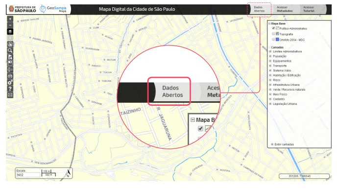
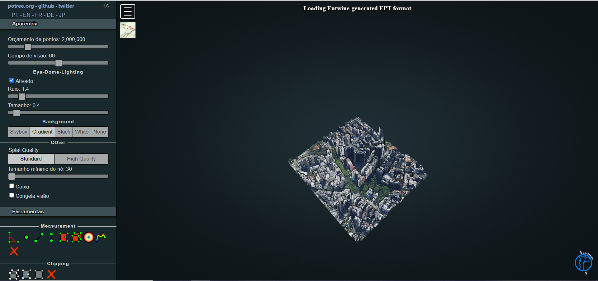
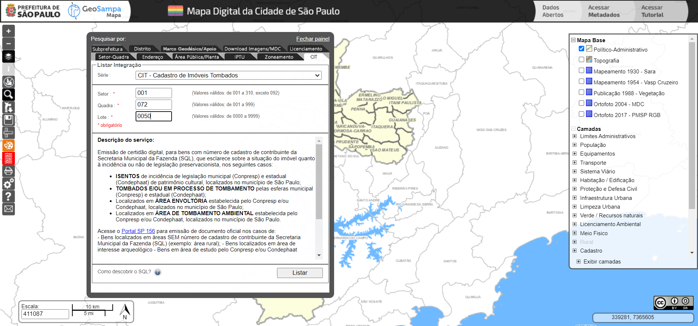
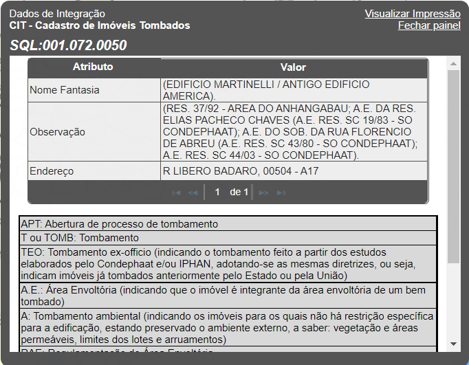
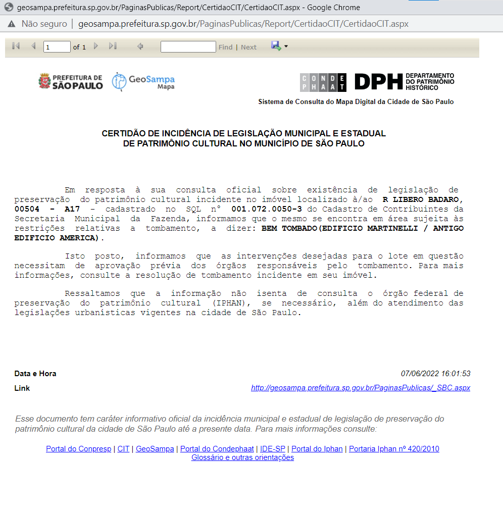

Tutorial Geosampa
Saiba como utilizar as ferramentas disponíveis na navegação pelos mapas e camadas de dados do Geosampa.


Especificações técnicas
Configurando o Ambiente
O Geosampa é compatível com os seguintes navegadores:
- Edge: versão 25 ou superior
- Firefox: 28 ou superior
- Google Chrome: 34 ou superior
- Internet Explorer: 9 ou superior
- Safari: 5 ou superior
Você poderá consultar essa orientação sempre que quiser clicando no botão  .
.
Sistemas de Referência Cartográfica
As informações são disponibilizadas em diversos sistemas de referência cartográfica:
| Datum | Projeção | EPSG |
|---|---|---|
| SAD69(96) | UTM 23 S | 5533 |
| SIRGAS 2000 | UTM 23 S | 31983 |
| SAD69(96) | GEOGRÁFICA | 5527 |
| SIRGAS 2000 | GEOGRÁFICA | 4674 |
| WGS84 | UTM 23 S | 32723 |
Nota técnica : No GeoSampa são fornecidos arquivos tanto na projeção SAD69(96) como SIRGAS2000 e WGS84. A projeção em SAD69(96) é fornecida apenas em caráter de compatibilidade com bases antigas, visto que, em 2014, foi definida a projeção UTM/SIRGAS2000 (EPGS: 31983) como a nova referência para o Sistema Geodésico Brasileiro (SGB) e para o Sistema Cartográfico Nacional (SCN). Desde então são consideradas oficiais apenas as informações produzidas tendo o Sirgas2000 como sistema geodésico.
Verifique se seu bloqueador de “pop-up” está desativado. Caso contrário, alguns downloads podem ser bloqueados.
Para evitar possíveis erros, sugerimos realizar periodicamente a limpeza do cache do seu navegador. Para isso, basta acionar o atalho: Ctrl + Shift + Del.
Serviços Web
O Geosampa permite visualizar os dados e informações diretamente no mapa digital da cidade(MDC) e/ou por meio de serviços on-line (WMS e WFS); permite também download de arquivos em diversos formatos e software.
Webservice: Para acessar dados por meio de serviço on-line (Webservice), utilize os links abaixo:
| Tipo do serviço | Link |
|---|---|
| WMS - Camadas | http://wms.geosampa.prefeitura.sp.gov.br/geoserver/geoportal/wms |
| WMS - Mapas Base | http://raster.geosampa.prefeitura.sp.gov.br/geoserver/geoportal/wms |
| WFS - Camadas | http://wfs.geosampa.prefeitura.sp.gov.br/geoserver/geoportal/wfs |
Conceitos
Dados abertos
O formato aberto dos arquivos permite sua reutilização em diversos aplicativos digitais. Ao clicar em “Dados Abertos”, a relação dos arquivos aparecerá de forma temática. Escolha um tema e faça o download do arquivo no formato desejado.
Os dados em formato aberto permitem que qualquer cidadão utilize variados softwares para adaptá-los às sua necessidade. Além disso, essas informações contribuem para a transparência e o processo participativo, bem como para a criação de novas aplicações colaborativas.
Acessar Metadados
Os metadados são as informações sobre cada uma das camadas, com o objetivo de proporcionar a correta utilização e interpretação dos dados, contendo: denominação, descrição do conteúdo, escala, tipo de arquivo, órgão responsável, periodicidade de atualização, entre outras informações.
Assim, ao clicar no botão "Acessar Metadados", localizado no canto superior direito, abrirá um arquivo com diversas planilhas (abas):
Consulta: planilha para consulta de metadados das camadas, sistemas e downloads
Metadados: listagem de camadas, sistemas e downloads disponíveis, que esta vinculada a 1° planilha
Categoria/Tipo Logradouro: relação dos tipos de logradouros (rua, avenida, estrada, etc.) e suas respectivas siglas
Predominância de Uso: tipos de uso de solo conforme cadastro municipal fiscal
Dicionário de logradouros: descrição das variáveis da base de dados geoespacial dos logradouros
Datum/Projeção: modelo matemático teórico da representação da superfície da Terra
IPTU: descrição das variáveis da base de dados disponível para download no GeoSampa
SLC-e: tipos de alvarás disponíveis para consulta no GeoSampa
Webservice: serviços de mapa via web
Publicação 1988 - Vegetação: descrição e legendas do mapa

Escala
Escala cartográfica é a proporção de redução da área da paisagem real para sua representação no mapa. Existem dois tipos de escalas cartográficas: numérica e gráfica.
Escala numérica: expressa o valor em números
No GeoSampa a escala mostra a variante dessa proporção no canto inferior esquerdo do mapa. Por exemplo: 100000 (cem mil). Isso significa que um centímetro no mapa corresponde a 100 centímetros (equivalente a 1 quilômetro) na paisagem real.
Escala gráfica: cada centímetro da escala vai corresponder a uma certa distância, expressa em metros ou quilômetros
Para saber mais clique aqui.
Tela Inicial e Navegação
Mapa Digital da Cidade (MDC)
Esta é a primeira tela do mapa, ao acessar o GeoSampa. A seguir, serão descritas as alternativas de navegação e ferramentas disponíveis.

Menu de Ferramentas e tipos de cursor
Menu de Ferramentas
Quanto maior a escala, mais detalhada a imagem: 1:500 mais detalhe, 1:800.000 menos detalhe, por exemplo.
Cada camada possui um limite de escala de visualização adequado à sua legibilidade. Caso necessário, deve-se aumentar a escala até que a camada fique habilitada, pois só é possível ligar a camada, se o zoom for adequado a sua visualização. Por exemplo, a camada “Lote” só pode ser visualizada em escala abaixo de 1:5000 (exclusive)
Apresenta resumo dos atributos da(s) feição(ões) da(s) camada(s) escolhida(s), desde que ligada(s) e visível(is). Para isso, posicionar e clicar com a mira
no local da(s) feição(ões) de interesse. Toda a explicação sobre Informações fiscais do lote, se encontram em "Menu de Ferramentas" --> "Informações"
Com camada(s) de interesse ligada(s) o botão fica habilitado. Ao ser acionado, desfaz a seleção.
A próxima aba “Distrito” funciona da mesma forma. Selecionando um dos 92 Distritos, o zoom aproximará sua visualização.
A terceira aba, “Marco Geodésico” apresenta pontos fixos no terreno usados como referencial cartográfico. Para saber mais sobre o assunto, no menu lateral, clique em "Outras Consultas" --> "Marco Geodésico"
Após clicar nesse botão, escolha um dos temas do menu. De acordo com o tema escolhido,
será apresentada uma série de arquivos. Ao selecioná-los, o download será iniciado escolher a extensão do arquivo de
interesse (.shp, .kmz oudxf).
Também podem ser baixados arquivos em formatos diversos pelo botão "Pesquisar", exigindo,
entretanto, seleção de regiões /folhas/fotos no mapa.
Também podem ser baixados arquivos em formatos diversos pelo botão "Pesquisar", exigindo, entretanto, seleção de regiões /folhas/fotos no mapa.
E podem ser usados para inúmeras aplicações com auxílio de diversos software. Saiba mais.
O enquadramento na prévia de impressão não é idêntico à tela. É possivel mover a imagem dentro da moldura. Se necessário, altere a escala da tela para uma visualização adequada.
Para imprimir, clique no ícone da impressorano canto direito inferior do mapa. Na tela de impressão que se abre, podese escolher uma impressora que converta para o formato PDF, o que lhe permitirá alterar o tamanho da impressão. Neste caso, alertamos quanto à possibilidade de distorções.
Na parte de baixo será exibida a legenda do mapa base e das camadas habilitadas. Também serão mostradas as informações das feições selecionadas com o botão “I”.
Para entrar em contato com a equipe,preencha nome, e-mail e envie sua mensagem.
Tipos de cursor
O cursor assume diferentes formas dependendo da sua função.
Abaixo seus formatos com as funcionalidades possíveis em cada um com exemplos práticos de aplicabilidade.

Seta
Permite escolher funcionalidades (botões, camadas etc) e navegação pelo mapa.


Dedo
Seleção dentro de uma caixa de diálogo ou janela.


Quadrado
Aparece para medir distância, área e ângulo (não há aderência / atração / ímã); a precisão é limitada pela escala.


Cruz
Arrasta caixa de diálogo/janela.


Cursor de texto
Requer preenchimento de um campo.

Mapas Base e Camadas
Você pode escolher um dos mapas base disponíveis como plano de fundo, sendo possível alterá-lo a qualquer momento durante sua navegação. Entretanto, é permitido visualizar apenas um por vez. Também pode-se deixar sem plano de fundo.

Em Camadas, está o conteúdo do mapa com as informações georreferenciadas de várias secretarias e órgãos públicos.
As camadas estão organizadas em grupos temáticos. Você poderá abrir o grupo clicando no botão + e habilitar a camada de interesse. Caso queira habilitar todas as camadas do grupo, poderá clicar apenas uma vez neste. Todas as camadas serão habilitadas automaticamente.

As informações de cada camada estão disponíveis no botão Acessar Metadados, que se encontra na parte superior direita, conforme indicado na sessão deste tutorial dedicada aos metadados.
Informações sobre as feições ou elementos do mapa
Habilite, no menu à direita, as camadas das quais buscará mais informações.
Lembre-se que as informações somente aparecerão para as camadas habilitadas no menu. A seguir, clique no botão  e após,
no elemento de interesse no mapa
e após,
no elemento de interesse no mapa

SQL - Setor-Quadra-Lote
O código SQL (setor-quadra-lote) representa a identificação dos lotes no Cadastro Imobiliário Fiscal da PMSP. Este código corresponde ao número do contribuinte e pode ser localizado no boleto de pagamento do IPTU. Também é possível identificar o código SQL utilizando o GeoSampa, veja como a seguir.

Informações fiscais do lote
O GeoSampa disponibiliza informações fiscais do lote, numa camada que é atualizada pela Secretaria da Fazenda. Essa camada substitui os croquis fiscais, que não são atualizados desde junho de 2019.
Todas as informações do croqui fiscal estão no painel de informações (acessado pelo botão “i”) conectado diretamente ao banco de dados da Secretaria da Fazenda.
- Primeiro, aproxime o zoom para possibilitar a visualização e permitir acionar a camada;
- Ligue a camada “Lotes”, no grupo: Cadastro / Cadastro Fiscal / Lote;
- Clique no botão “i” (Informação), em seguida, no lote de interesse.
- Aparecerá uma caixa de diálogo com as informações fiscais do lote.

Em lotes ocupados por condomínio aparecerão as informações de cada unidade. Atente que também aparece o número do setor, quadra e lote(SQL).

Como pesquisar?
LiDAR 3D - Modelo Digital de Terreno (MDT)
A partir dos dados obtidos no aerolevantamento de 2017, utilizando um sensor laser emitindo feixes embarcados em helicóptero, foi disponibilizada a cartografia 3D de toda a cidade. O produto é uma nuvem de pontos que possibilita a reconstrução do objeto em terceira dimensão.
Com isso, é possível visualizar pontos no terreno (que constituem o MDT – Modelo Digital de Terreno), assim como o Modelo Digital de Superfície – MDS, que compreende as edificações, árvores, obras viárias entre outros objetos, na forma nuvem de pontos no mapa digital. O conteúdo está disponível para download e para consulta web. Para download, os arquivos estão em formato LAZ (LAS compactado) e podem ser usados para inúmeras aplicações com auxílio de diversos softwares. Com esses dados, por exemplo, a cratera e a cachoeira na zona sul da cidade ficam evidentes em imagens a baixo:


Para a visualização web dos dados 3D, localize e clique na ferramenta  "LiDAR 3D" e selecione a porção do território
da cidade que deseja visualizar. Após esse comando, abrirá uma tela para que escolher que tipo de dado se quer abrir no visualizador web: MDS, onde estão representados
o terreno e as edificações, árvores, obras viárias e outros objetos; ou MDT, em que somente o terreno é representado.
"LiDAR 3D" e selecione a porção do território
da cidade que deseja visualizar. Após esse comando, abrirá uma tela para que escolher que tipo de dado se quer abrir no visualizador web: MDS, onde estão representados
o terreno e as edificações, árvores, obras viárias e outros objetos; ou MDT, em que somente o terreno é representado.
Após escolher seu local de interesse e o tipo de modelo digital, clique em “Visualizar” e você será direcionado para uma nova janela, fora do mapa do GeoSampa, onde serão carregados os dados do LiDAR. Nesse ambiente, você poderá aproximar a visualização do modelo 3D, bem como fazer medições e análises.
O visualizador LiDAR possui as seguintes funções com o mouse:
Botão direito, você pode mover o espaço analisado dentro da janela de visualização
Botão esquerdo, você ajusta a orientação da visualização do modelo 3D (rotacionar, inclinar, ajustar o ângulo de visão, etc.)
Botão de rolagem (scroll), você dá zoom no modelo 3D
O visualizador LiDAR possui menus de configurações e ferramentas, dispostos na lateral esquerda da tela, que permitem que você aproxime o modelo 3D, calcule altura, entre outras funções. Entre as ferramentas disponíveis nesse menu, você vai encontrar o “Orçamento de pontos”, onde você pode escolher quantos pontos vão estar disponíveis para visualização na nuvem de pontos, bem como ferramentas para medir altura de edificações, distâncias, ângulo, volume, etc.
Desenho e medições
Calcular distâncias, área e ângulos
Ao clicar no botão  o cursor estará habilitado para
medir a distância entre pontos, a área de um polígono ou o ângulo
entre dois segmentos.
o cursor estará habilitado para
medir a distância entre pontos, a área de um polígono ou o ângulo
entre dois segmentos.
- Escolha a opção desejada.
- Clique no ponto inicial e mova o cursor até o ponto seguinte.
- Com um clique, você continuará traçando um segundo segmento e assim por diante.
- Para encerrar a medição, dê dois cliques no último ponto.

Para obter área e ângulos deve-se seguir os mesmos procedimentos.
As distâncias de cada segmento traçado ficarão registradas nos trechos da medição e a área, no interior do polígono. O ângulo será dado somente em relação ao último e seguimento feito e o anterior a este.
O resultado da medição não tem caráter documental nem precisão.
Ferramenta de Desenho
Ao clicar na ferramenta de desenho  , uma janela será habilitada.
, uma janela será habilitada.

- Selecione o tipo de desenho que deseja inserir.
- Escolha a cor de sua preferência e, em seguida, insira o desenho no mapa.
- Seu desenho poderá ser movido ou editado utilizando as ferramentas da parte inferior da janela.
- Se desejar apagar apenas um dos elementos inseridos, clique no botão
e, em seguida, no desenho desejado.
Os desenhos inseridos ficarão ativos apenas durante cada seção de navegação. Caso feche o GeoSampa, ou desligue o navegador, os desenhos não serão salvos.
Download
Download de arquivos
O conteúdo do GeoSampa está disponível para download além dos mapas articulados.
Para fazer o download, clique no ícone  escolha o tema de interesse e, em seguida, os arquivos desejados.
escolha o tema de interesse e, em seguida, os arquivos desejados.
Alguns arquivos podem estar divididos por distritos (como "Edificação", por exemplo) devido ao grande volume de dados. Lembre-se de verificar o local em que serão armazenados os arquivos obtidos pelo download nas configurações de seu navegador.


Alguns deles estão disponíveis em mais de um formato. São eles:
| Portable Document Format):arquivo para visualização, contendo o mapeamento planialtimétrico do MDC; | |
| DXF | (Drawing Exchange Format):arquivo em formato CAD contendo o mapeamento planialtimétrico do MDC. Os arquivos estão divididos por folhas do Sistema Cartográfico Metropolitano (SCM), representadas como quadrículas no mapa; |
| DXF | MDT | arquivo em formato CAD,contendo o modelo digital do terreno, ou seja, altimetria do MDC representada por nuvem de pontos 3D; |
| SHP | (Shapefile); |
| KMZ | (Keyhole Markup Zipped) |
| XLS | CSV | planilhas de dados e séries históricas |
Download de croquis e plantas
Para realizar o download você precisará clicar na aba "Área Pública/Planta" no menu Pesquisar. Em seguida escolher entre as quatro opções para localizar e fazer o download dos documentos após habilitar a camada correspondente.
As camadas Cadastro de Área Pública, Croqui Patrimonial e Área Cedida estão no grupo Cadastro dentro do subgrupo Área Pública. A camada Utilidade Pública e Interesse Social (DIS/DUP) está no grupo Utilidade Pública e Interesse Social.
As camadas Área Urbanizada Regularizada - AU e Arruamento - ARR estão no grupo Cadastro dentro do subgrupo Parcelamento.
![Imagem mostrando onde localizar, para cada tipo de download a camada referência ue precisa estar ativada.
Primeiro, se, localizar área pública: grupo Cadastro, subgrupo Área Pública, Cadastro de área pública.
Segundo, se, Localizar Croqui Patrimonial: grupo Cadastro, subgrupo Área Pública, Croqui Patrimonial.
Terceiro, se, área cedida: grupo Cadastro, subgrupo Área Pública, Área Cedida.
Quarto, se, Localizar Plantas DIS,DUP: grupo Legislação Urbana, subgrupo Bens Protegidos, Utilidades Públicas e Interesse](images/26_download_croquis_plantas.png)
Marco Geodésico
Para realizar o download você precisará, no MENU pesquisa, ativar a aba: "Marco Geodésico".
O Marco Geodésico é a terceira aba da janela de pesquisa e apresenta pontos fixos no terreno usados como referencial cartográfico.
- Primeiro,habilite a camada “Marco Geodésico”que esta em Meio físico/ Topografia.
- No mapa,identifique o marco próximo a área de seu interesse.
- Entre na ferramenta “pesquisar”, na aba Marco Geodésico” e preencha a lacuna “Número do pilar".
- Na caixa a baixo, aparecerá o número do pilar, novamente.
- Ao clicar o ponto estará centralizado na tela.
- Clique no ponto selecionado e mostrará a monografia do Marco Geodésico.

Download de imagens/MDC
Para realizar o download você precisará, no MENU pesquisa  , ativar a aba: "Download de Imagens/MDC".
, ativar a aba: "Download de Imagens/MDC".
- Primeiro selecione o tipo de download de imagem desejado.
- Depois aperte em selecionar.
- Posicione o cursor do mouse na área de interesse e clique sobre o local desejado.
- A área do mapa articulado ficará destacada.
- Ao clicar na área em destaque ou no botão download, uma janela aparecerá com os arquivos disponíveis.
- Clique no nome do arquivo escolhido para abri-lo ou salvá-lo em seu computador.


Principais Pesquisas
Pesquisa por lote fiscal - SQL
A aba Setor-Quadra aproxima a visualização do lote, após o preenchimento das lacunas .

Consulta ao IPTU
À esquerda, localize a ferramenta “Pesquisar” , selecione a aba IPTU e preencha as informações de setor, quadra e lote, depois clique em “Listar”

Aparecerá uma caixa para verificação de acesso e depois as informações do IPTU do lote indicado

Pesquisa sobre o zoneamento - SISZON
No botão Pesquisar , localize a aba Zoneamento e preencha Setor, Quadra e Lote.
O resultado apresenta: zoneamento, parâmetros de ocupação, quota
ambiental e notas - quadro 3 da lei n° 16.402/2016.

Clique em “Visualizar Impressão”, na parte superior direita, e obtenha um relatório formatado

Para saber mais informações sobre o zoneamento, observe a caixa “Mensagem” e vá no link “clique aqui”.

Pesquisa sobre Licenciamento - sistema SLCe
O Sistema de Licenciamento Eletrônico de Construção é gerenciado pela Secretaria Municipal de Licenciamento e compila os seguintes processos:
I- Licenciamento de edificação nova ou reforma para os seguintes usos:
Residências unifamiliares;
Casas geminadas;
Casas sobrepostas;
Usos não residenciais até 1.500 m² de área construída;
II– Pedidos de licenças complementares tais como:
Estande de vendas;
Certificado de conclusão;
Grua;
Troca de responsabilidade técnica;
Tapume;
Comunicação de obras de emergência;
Desdobro e remembramento de lote;
Outras comunicações;
Alvarás de demolição;
Passo a passo:
- Primeiro, à esquerda, localize a ferramenta “Pesquisar”, selecione a aba ”Licenciamento” e preencha as informações de setor, quadra e lote, depois clique em “Listar”.
- Para obter um relatório em PDF, vá até “Documento Alvará SLCe”, clique em “Clique aqui para abrir”.
- Abrirá uma caixa de diálogo com as informações disponíveis no SLCe sobre ao SQL informado.
- Ao clicar no link “Clique aqui para abrir” o documento fica disponível para visualização e download.

Consulta ao CIT – Cadastro de Imóveis Tombados
Consulta e emissão de certidão digital que esclarece sobre a situação do imóvel quanto à incidência ou não de legislação de tombamento.
Localize a ferramenta “Pesquisar” e vá até a aba CIT, digite as informações de setor, quadra e lotes e clique em “Listar”.
Em seguida, será exibida uma janela de integração, apresentando informações relacionadas ao tombamento do imóvel.
Essas informações podem ser salvas ou impressas, na forma de uma certidão digital, clicando em “Visualizar Impressão”.
Pesquisa a partir do endereço
Clique em e escolha a aba Endereço. Preencha os campos sem acentuação.
O “tipo” de logradouro (rua, avenida, viela, estrada etc.) e o “título” do logradouro (Santo, Padre, Engenheiro etc.) não são obrigatórios, mas podem ajudar a refinar sua busca.
Caso utilizados, insira-os nos campos específicos e não com o nome do logradouro.

Atente para a possível existência de mais de uma página com opções de logradouros com o nome pesquisado.

Na pesquisa por endereço e número, o ponto resultante aparecerá dentro do respectivo lote. Caso o número pesquisado não conste no banco de dados, a pesquisa indicará o local mais próximo no eixo da via.

Outras consultas disponíveis
Glossário de Siglas
| Sigla ou Palavra-Chave | Significados |
|---|---|
| UTM | Sistema de coordenadas cartesianas - Universal Transversa de Mercator |
| EDIFICAÇÃO | Obra coberta destinada a abrigar atividade humana ou qualquer instalação, equipamento e material. (Lei n° 16.642/2017 - Código de Obras) |
| IMÓVEL | O lote, público ou privado, edificado ou não, assim definido: a) imóvel edificado: aquele ocupado total ou parcialmente com edificações permanentes b) imóvel não-edificado: aquele não ocupado ou ocupado com edificação transitória, em que não se exerçam atividades nos termos da legislação de uso e ocupação do solo. |
| LOTE | A parcela de terreno resultante de loteamento, desmembramento ou desdobro, contida em uma quadra com, pelo menos, uma divisa lindeira a via de circulação oficial. |
| LOTEAMENTO | É a subdivisão de glebas em lotes destinados à edificação, com aberturas de novas vias de circulação, de logradouros públicos ou prolongamento, modificação ou ampliação das vias já existentes. O loteamento é precedido de diretrizes para fixação das áreas verdes, institucionais e sistema viários públicos e eventuais faixas não edificáveis. (SEHAB). |
| NON AEDIFICANDI | Supressão de vegetação localizada em área de preservação permanente. Lote onde não pode haver nenhum tipo de assentamento urbano, restrito a áreas de conservação ambiental, próximo a represas etc. |